Умница!
Попробуй еще раз!
Молодец!
Попробуй еще раз!
Умничка!
Попробуй еще раз!
Даа!
Попробуй еще раз!
Угу...
Попробуй еще раз!
Наконец то!!
Неправильный ответ!
Мы вместе уже
Наше знакомство
30 Июля 2024 Года.
Наша с тобой первая встреча на Дименции. Период в котором мы совсем друг друга не знали, совсем не общались лично
Первые намеки
30 Сентября 2024 Года.
Уже тогда, ты начинала проявлять ко мне внимание, правда, я пока этого не видел
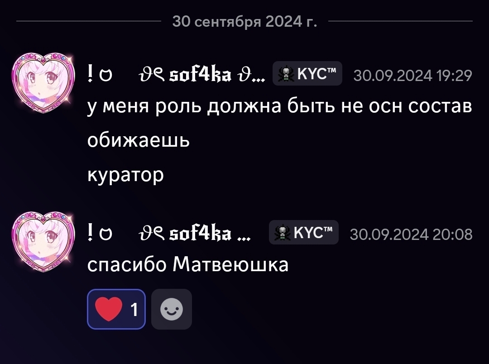
Уход с Дименции
1 откября 2024 Года.
Наша с Андреем ссора, по итогу которой, ты оказалась единственной, кто меня поддержал, и кто сказал как хорошо было работать
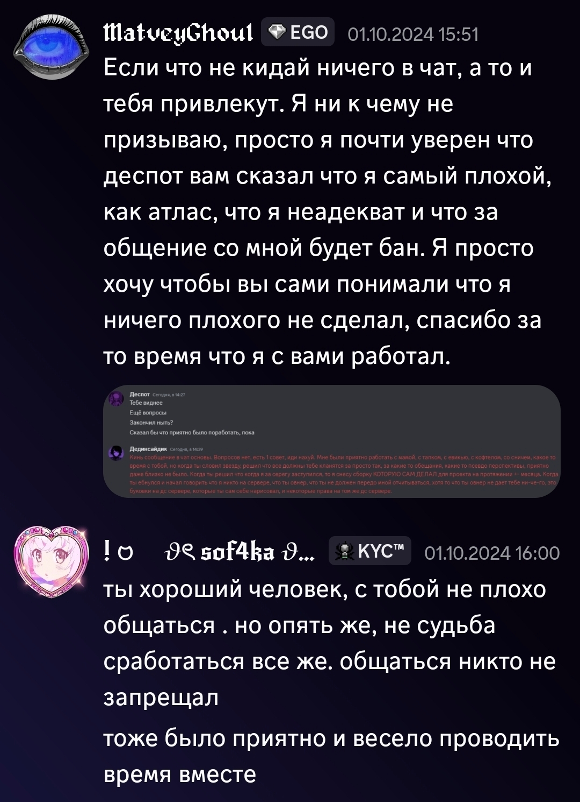
Первые звонки
19 Октября 2024 Года.
Наши долгие звонки, от которых было невозможно устать, начало нашего активного общения. Именно в этот день, начался мой самый лучший и светлый период в жизни
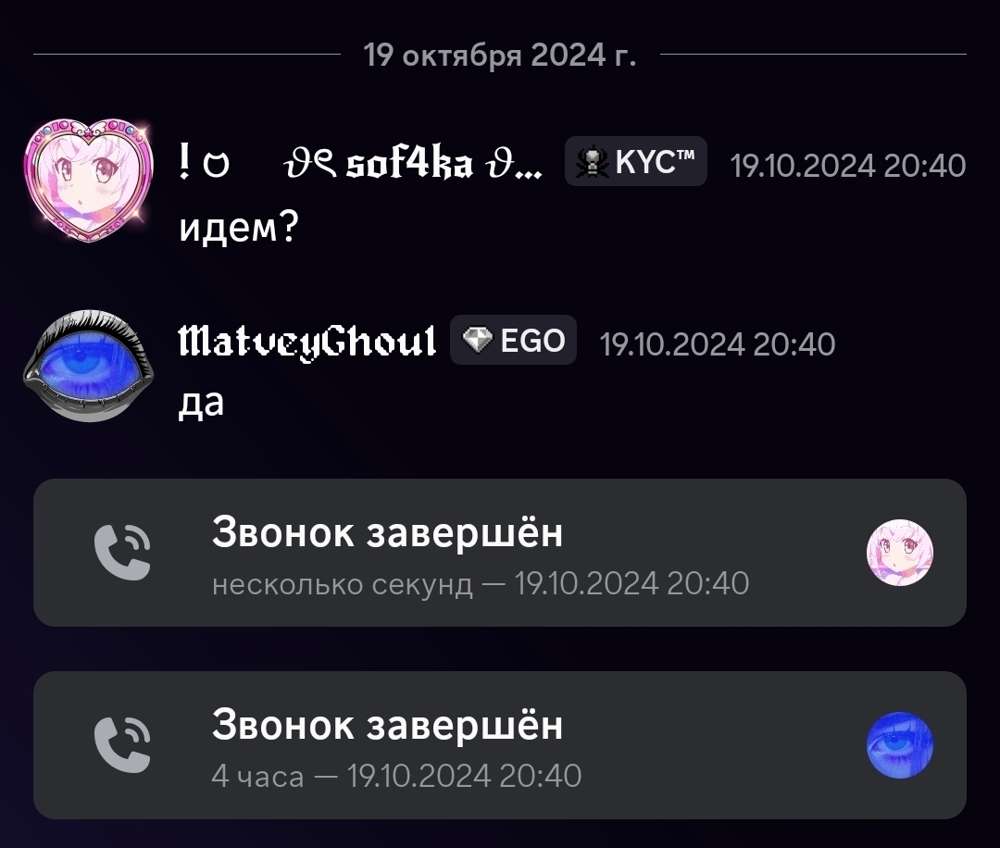
Твой уход с Дименции
28 Октября 2024 Года.
Момент, когда тебе писал Андрей, Даня, и все остальные, кроме меня некому было за тебя заступиться, и я им всем писал, успокаивать тебя, и наконец закончилась вся эту "арка" Дименции
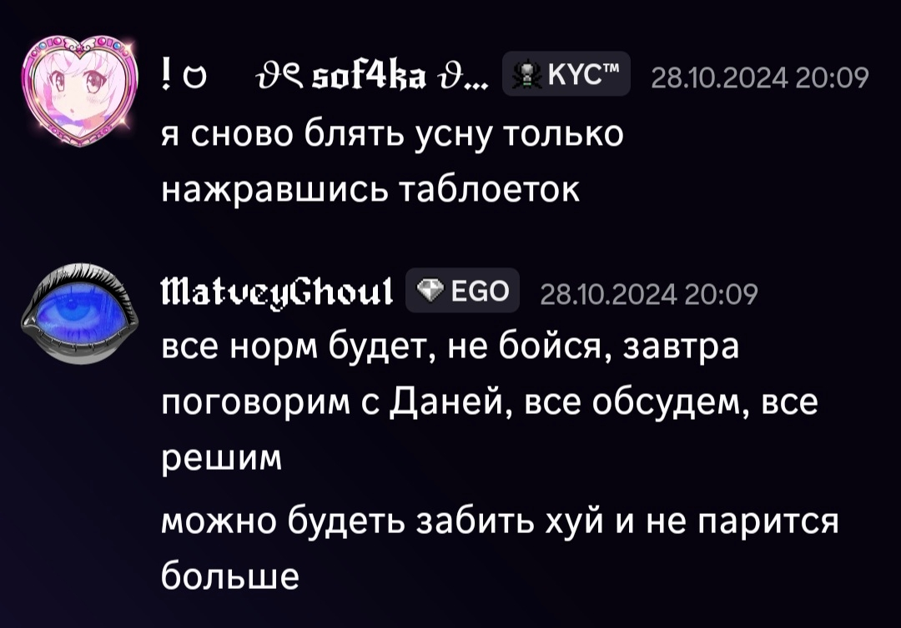
Начал догадываться
30 Октября 2024 Года.
Наконец я начал что то понимать, твои намеки, слова, и в первую очередь то что сам чувствую к тебе. Все было очень сложно и непонятно, из за того что никогда с таким по настоящему не сталкивался, но за 2 года я так ни о чем и не пожалел
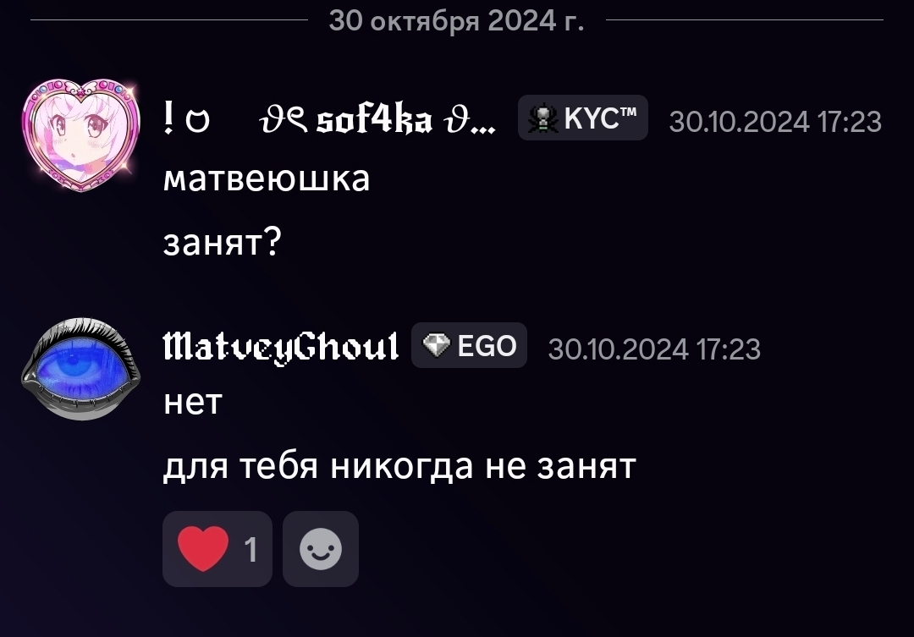
День X
31 Октября 2024 Года.
День, когда наконец все стало на свои места. Я понял кто ты для меня, и кем на то время буду я для тебя. Тогда я еще не знал к чему все приведет, как долго все продлиться, моя жизнь действительно координально изменилась, но тот день для меня был счастливее всей прошлой жизни
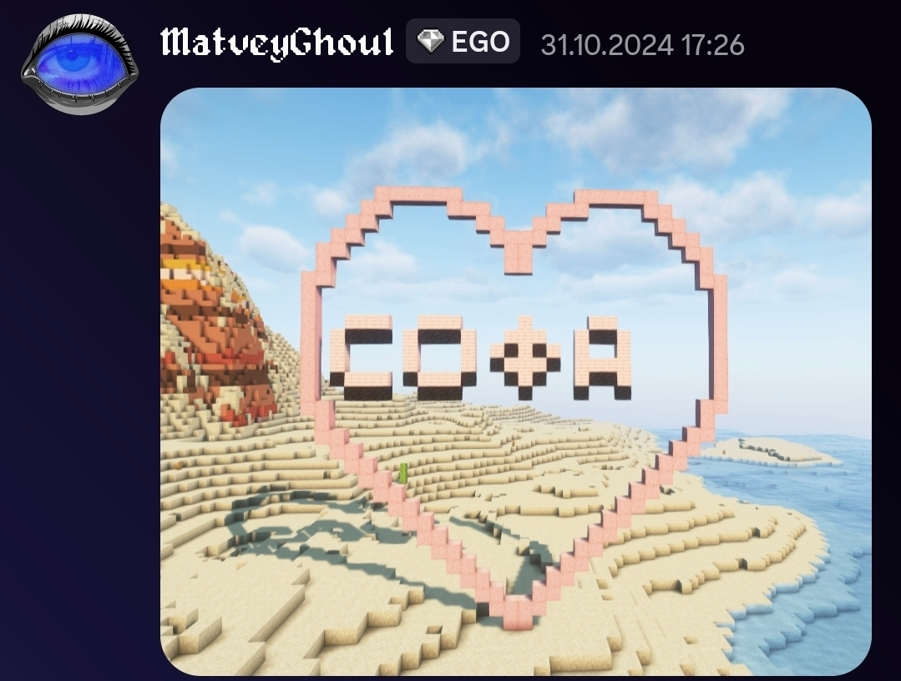
Новый год
31 Декабря 2024 Года.
Наш первый новый год вместе. Я был рад каждому дню, проведенному с тобой, и был рад встречать этот новый год пусть не физически, но вместе с тобой
8 Марта и расставание
8-9 Марта 2025 Года.
8 Марта, праздник, а затем расставание. Все это время начиная с февраля был очень трудный период для нас, ссоры, холод, и в конечном итоге разрыв. Может из за эмоций, а может из за глупости, ведь, оборачиваясь назад, я бы точно сделал все, чтобы этого не произошло, но самое интересное еще впереди
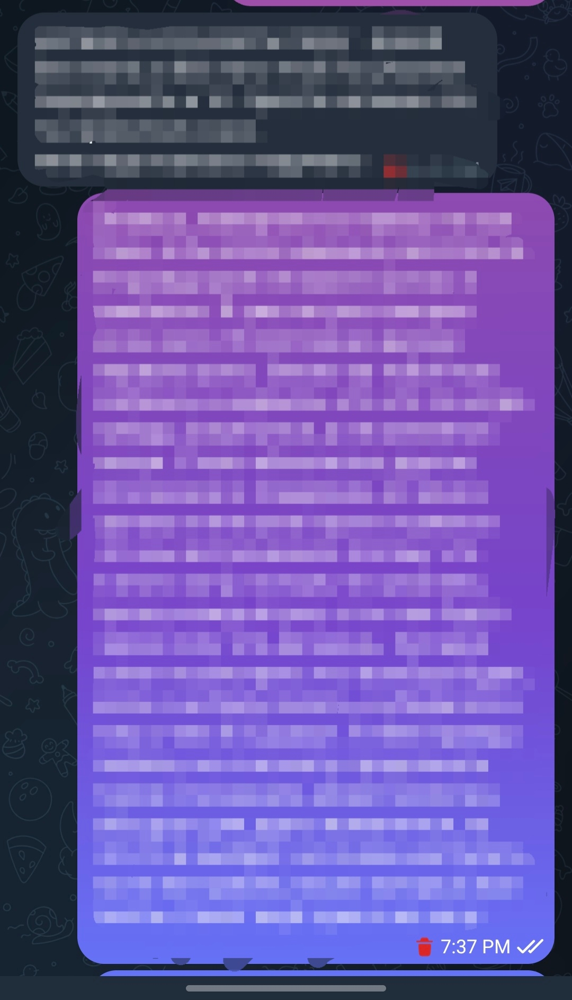
Наше первое общение спустя 3 месяца
26 Июня 2025 Года.
Что бы не происходило за эти 3 месяца, я не мог не продолжать следить за тобой, твоей жизнью, но однажды ты написала мне сама. Это не был романтический разговор, скорее просто дружеский, легкий, интересовались жизнью друг друга, и все как то закрутилось
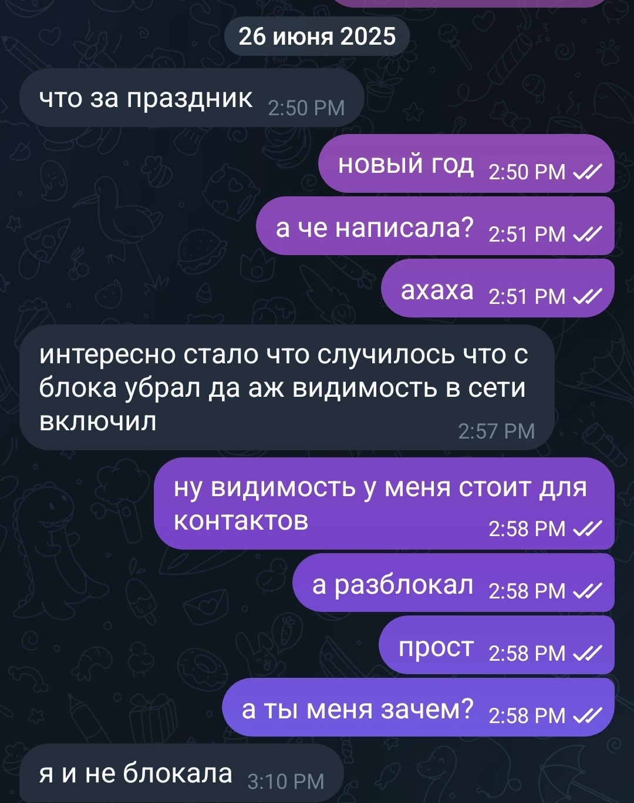
Снова вместе
3 Июля 2025 Года.
Осознав что были оба неправы, что расстались из за обычной глупости, мы решили сойтись, попробовать, и посмотреть что вообще будет. Именно этот день, в очередной раз, изменил мою жизнь в лучшую сторону
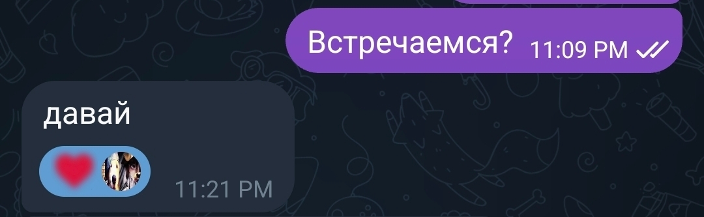
Первый год
1 Ноября 2025 Года.
Дата, которую мы договорились считать нашим годом отношений. Я был бесконечно рад что все сложилось так, что мы выдержали это все, сошлись, и продолжили наши отношения (И костюм человека паука))
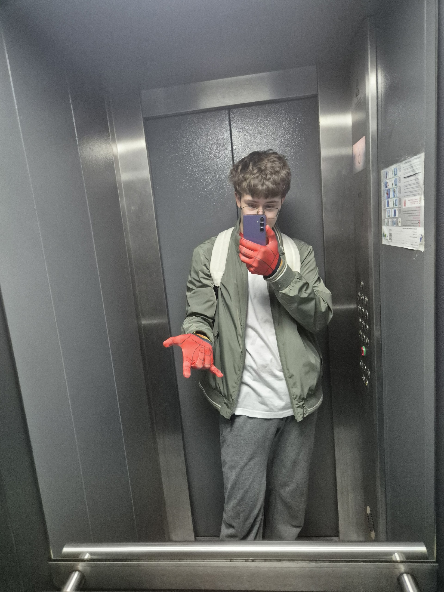
Новый год №2
31 Декабря 2025 Года.
Новый год. Уже второй, проведенный вмсете нами Новый год. Твой первый подарок руками, блокнот, где написаны твои стихи от руки, что делает их, конечно, менее читаемыми, но намного намного ценнее. Для меня это очень многое значит, как и паучок, которого ты сохранила
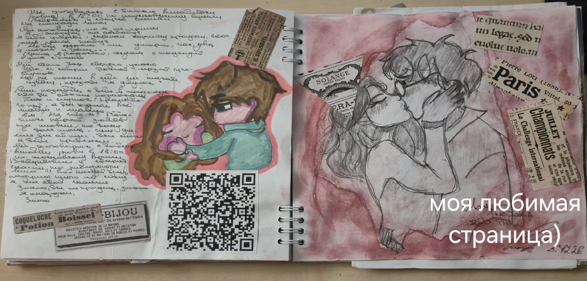
14 Февраля
14 Февраля 2026 Года.
Твой второй блокнотик, который оказался в 3 РАЗА толще прошлого. Я безумно рад каждому подарку, которые ты делаешь своими руками, и самое главное, я рад что это второе наше с тобой 14 февраля. Каждое слово и каждая буква написанная тобой для меня значит безумного много, даже если я не могу их прочитать)
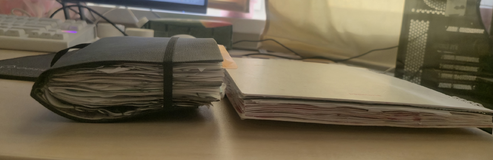
8 Марта + День рождения
8-18 Марта 2026 Года.
И вот, наконец то я встретил твой день рождение. Пусть прошлый я и пропустил из за расставания, я безумно хотел оправдать твои ожидания, и сделать что то чему была бы очень рада, и я посчитал что букетик будет лучшей идеей. Я старался работать над ним все свободное время, чтобы успеть его доделать, и обрадовать тебя подарком
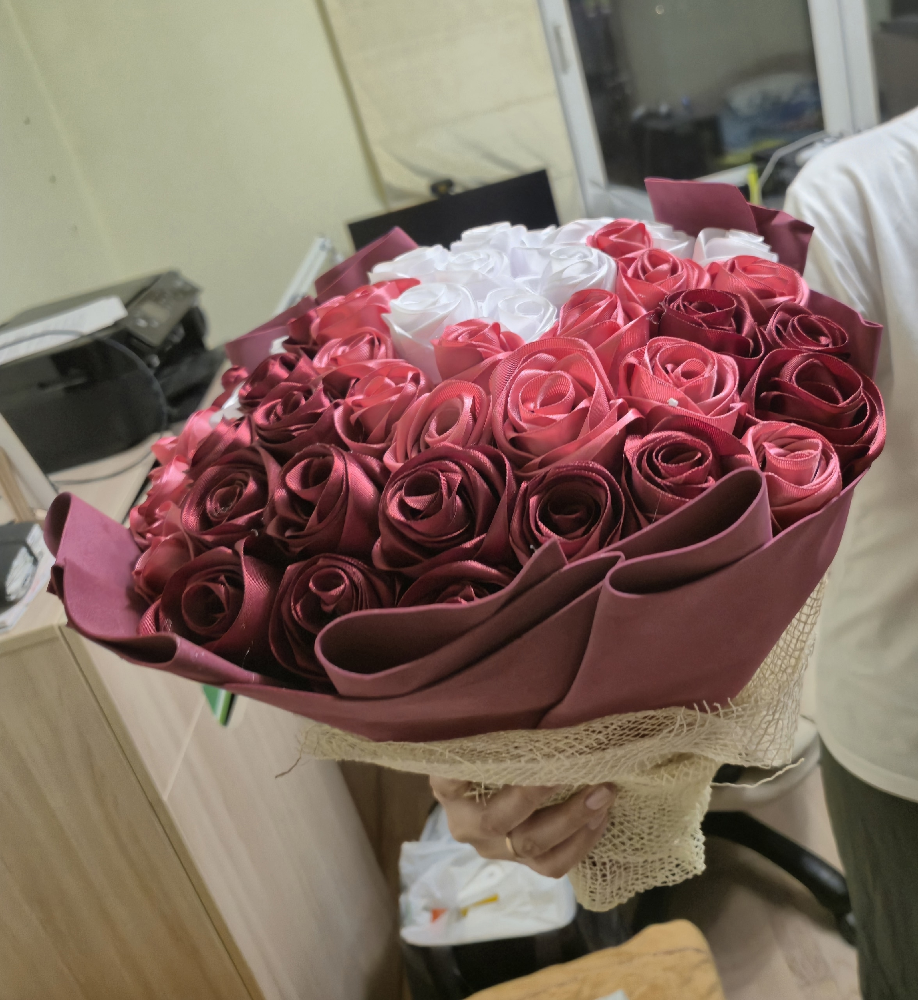
Начало моего подарка
Открябрь - Ноябрь 2026 Года.
Я начал делать тебе еще один букетик, в надежде, конечно, что тебе он понравится, и вообще понравится идея со вторым букетом. Я видел твои репосты, как тебе нравятся светящиеся букеты, и решил, что подарка лучше я не придумаю
2 Года
1 Ноября 2026 Года.
Я бесконечно рад, бесконечно благодарен субьде за то что когда то нас свела. Все произошло так случайно, так быстро, что я даже понять ничего не смог, а сейчас мне и не нужно. Я знаю что у меня самая лучшая девушка на свете, что ради нее я буду стараться изо всех сил, чтобы не разочаровать, чтобы оправдать любые ожидания, и в конце концов чтобы оставаться для нее, вернее тебя, единственным любимым. Я люблю тебя Софа, очень сильно, и буду любить всегда. Ты единственная моя причина двигаться дальше, достигать каких то целей, без тебя я не вижу своей жизни. Спасибо за то что ты есть
Подарок приехал!
X Ноября 2026 Года.
Раз ты это читаешь, то догадалась что код который я оставил в коробке - для сайта. Да, конечно второй букет может и слишком, но я очень старался. Старался заниматься подарком и уделять тебе время, так еще и за последнюю неделю сайт умудрился написать, все это для тебя солнце. Я лишь могу надеятся, что тебе все понравится, а раз ты видишь этот текст, то можешь сказать наверняка, и лучше напиши прямо сейчас) Ты не представляешь сколько ты значишь для меня Соф, по твоей воле я буду писать тебе такие сайты хоть каждую неделю, пока не кончаться идеи, и дарить цветочки на каждый празник в качестве традиции. Для тебя все что угодно Соф, я всегда говорил и буду так говорить. Люблю тебя, очень и очень сильно
И еще напоследок)
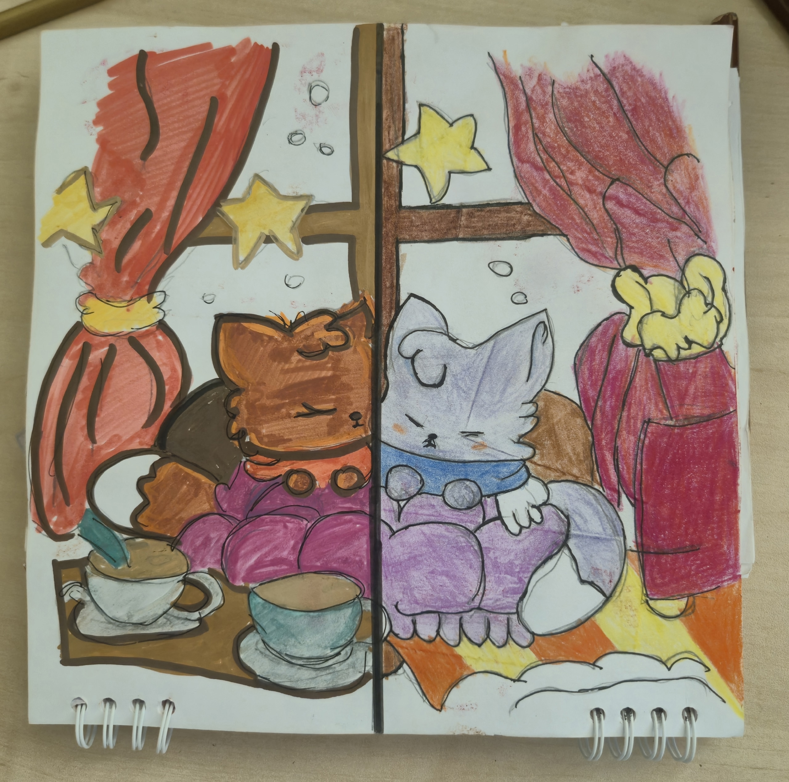
Я все таки дорисовал котика)
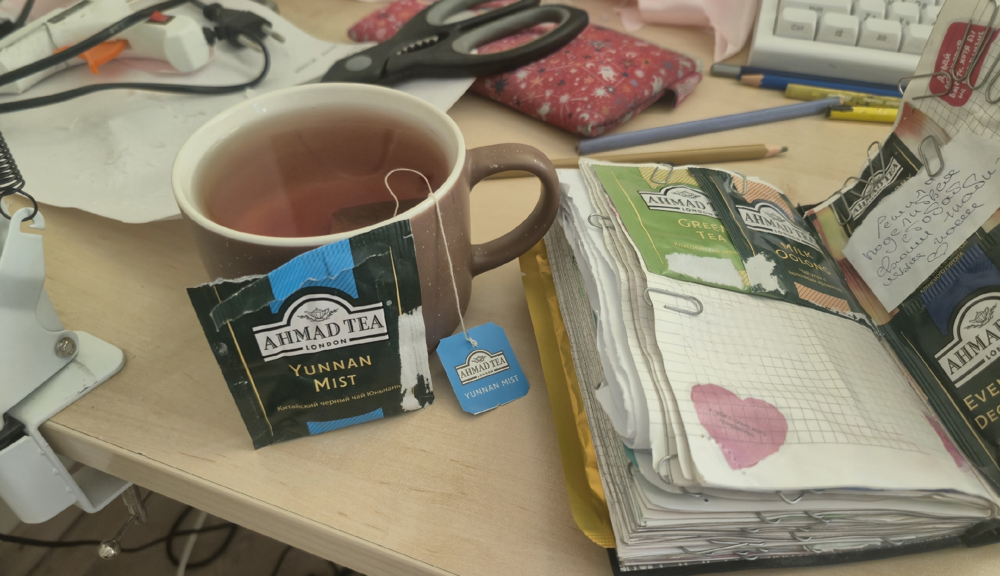
Конечно редко, но стараюсь не забывать про твой чаек)
Сегодня нам два года,
Я помню, как вчера,
И даже в непогоду
Сидел с тобой по вечерам.
Общались обо всяком,
И даже в лихорадку
Сквозь головные боли,
Ложилась со мной спатки.
Сейчас, спустя два года
Я ничуть не изменился,
И в ту же непогоду,
Все так же ты мне снишься.
И ты осталась та же,
Красивая и милая
В любое время года
Ты самая любимая.
И месяца, и годы,
Их проведем мы вместе,
Всю ругань и все ссоры
Всегда решим на месте.
И если фантазировать,
О том – какой кто зверь
То ты была бы рыбкою
А я бы плыл за ней
Но если так подумать,
Представить, что я – рыба,
То ты бы была морем,
И без тебя – нет мира.
И ты для меня солнце,
Ты светишь ярче всех
Из видимой вселенной,
Из тысячи огней.
Из звезд других галактик,
Из всех других людей
Лишь мне так повезло,
Чтоб ты – была моей.